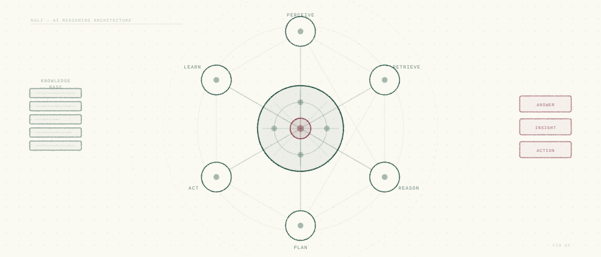
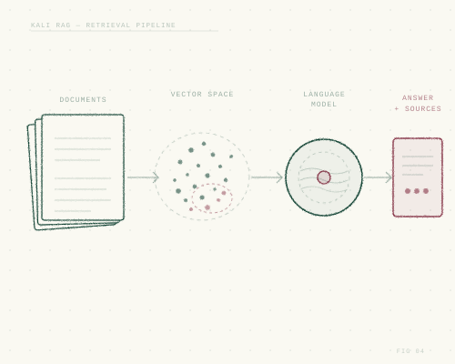
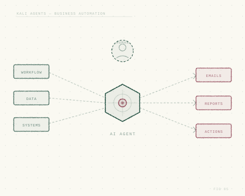
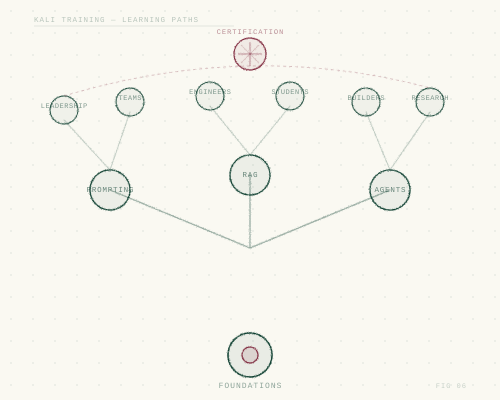

AI Agentic Solutions
AI agents that do real work — and prove it.
We design, build and evaluate AI systems that retrieve the right knowledge, take action through your tools, and keep a human in the loop where it matters. Every solution ships with the evaluation that shows it works.


01 · Kali RAG
Answers grounded in your own knowledge.
Retrieval-augmented generation connects language models to the documents, wikis, tickets and databases your organisation already has, so answers are accurate, current and traceable.
- Grounded and cited. Every answer links back to its sources.
- Connected. Ingestion pipelines for documents, knowledge bases and structured data.
- Secure. Respects existing access controls; deployable in your own cloud.
- Evaluated. Retrieval quality and answer faithfulness measured against a test set you own.

02 · Kali Agents for small & medium business
An AI partner sized for your business.
Small and medium businesses rarely need a platform — they need the right few workflows automated well. We work alongside you as a long-term partner, not a one-off vendor.
- Find the value. Identify the workflows where agents save the most time or money.
- Build agents that act. Tool use, integrations and approvals wired into your existing systems.
- Human in the loop. Clear checkpoints wherever decisions carry risk.
- Run and improve. Monitoring, cost control and iteration after go-live.

03 · Kali Training
AI training for corporates and universities.
Practical programmes that help people understand, use and build with AI responsibly — tailored to the audience, from leadership to engineering teams and students.
- Leadership briefings. What AI can and cannot do, and how to plan for it.
- Hands-on workshops. Prompting, RAG, agents and evaluation with real exercises.
- University programmes. Course modules, guest lectures and project mentoring.
- Measured learning. Pre- and post-assessments so progress is visible.
How we measure AI
If it can’t be evaluated, it isn’t finished.
We agree the evaluation criteria with you before we build, and report against them throughout.
Retrieval quality
Does the system find the right information? Measured on a curated set of real questions.
Answer accuracy & faithfulness
Are answers correct and supported by their sources? Hallucinations are tracked, not ignored.
Latency & cost per task
How fast and how expensive is each answer or action? Budgets are set up front.
Adoption & time saved
Is the solution actually used, and what does it save? The measure that matters most to the business.

Let’s find where AI earns its keep.
Share a workflow, a knowledge problem or a training need. We’ll come back with a scoped proposal and the metrics to judge it by.